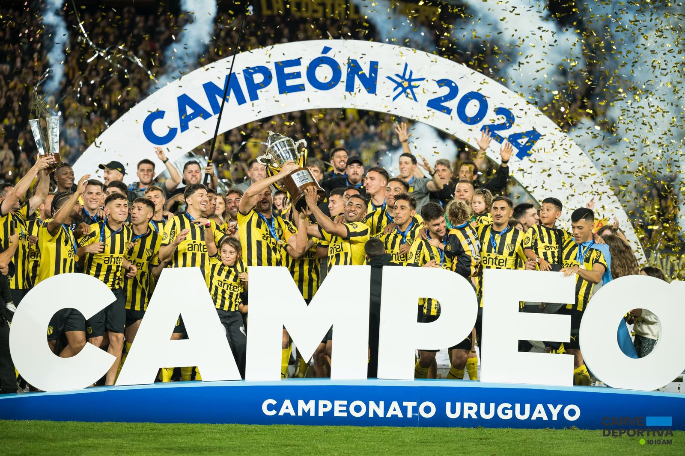

Analisis de cara a este 2025

El Club Atlético Peñarol afronta el año 2025 de buena forma respecto a otros años, habiendo mantenido a su gran director técnico,
Diego Aguirre, y a su flamante figura Leonardo Fernández, el equipo carbonero se prepara para una temporada en la que, entre otras cosas,
se buscara repetir la buena actuación del club en la Copa Libertadores.
Peñarol mantiene gran parte de su plantel de cara a este año pero con una muy importante baja, Guzmán Rodríguez, la partida del zaguero al futbol brasileño ha provocado preocupación entre los hinchas; no obstante, el club no se quedo de brazos cruzados, asegurándose así al zaguero-lateral Gastón Silva, siendo este una de las incorporaciones de los carboneros en esta nueva temporada. El equipo de Aguirre no solo incorporó al zaguero de 30 años, sino que también pudieron cerrar al ex golero de Independiente, Martin campaña, al extremo con pasado en Liverpool, Diego García, y a quien hasta ahora ha sido su mejor incorporación, catalogada así por los hinchas, David Terans.
La continuidad de Diego Aguirre y el haber logrado mantener gran parte del plantel provoca que el equipo no sufra cambios radicales en su forma de juego. Peñarol se ha caracterizado por jugar con un estilo de juego presionante y, con balón, siempre intenta buscar a su gran figura Leonardo Fernández.
Luego de haber jugado dos partidos amistosos, contra Colo Colo y San Lorenzo, y haber pasado gran parte de la pretemporada, se pudieron ver las grandes falencias del equipo. La falta de laterales veloces, el problema de finalización de sus extremos, la falta de un golero de jerarquía y el desorden en defensa y mediocampo provocaron que el club no pudiera ganar ninguno de los dos amistosos, aumentando así la preocupación de los hinchas.
Ahora el equipo de Aguirre se prepara para afrontar los clásicos, un gran debe para este equipo. Peñarol buscará ganar estos partidos ante su gran rival, pero a su vez, deberá buscar una solución a los problemas vistos en cancha para llevarle tranquilidad a su hinchada. Diego Aguirre, Leonardo Fernández, David Ternas, y compañía provocan ilusión en la hinchada queriendo repetir la actuación en el campeonato uruguayo, y buscando el tan ansiado objetivo que es ganar la Copa Libertadores.